Bora Junto?
O Latinidades precisa de você
Latinidades. Educação (re)compartilhada
O Latinidades é um projeto que almeja altos voos, isso só será possivel com ajuda de vocês. Pensando nisso criamos o programa “Bora Junto?”, nele os apoiadores acompanharão mais de perto nosso trabalho. O melhor de tudo é que você contribui com o que puder, além de alterar o valor ou cancelar quando quiser.